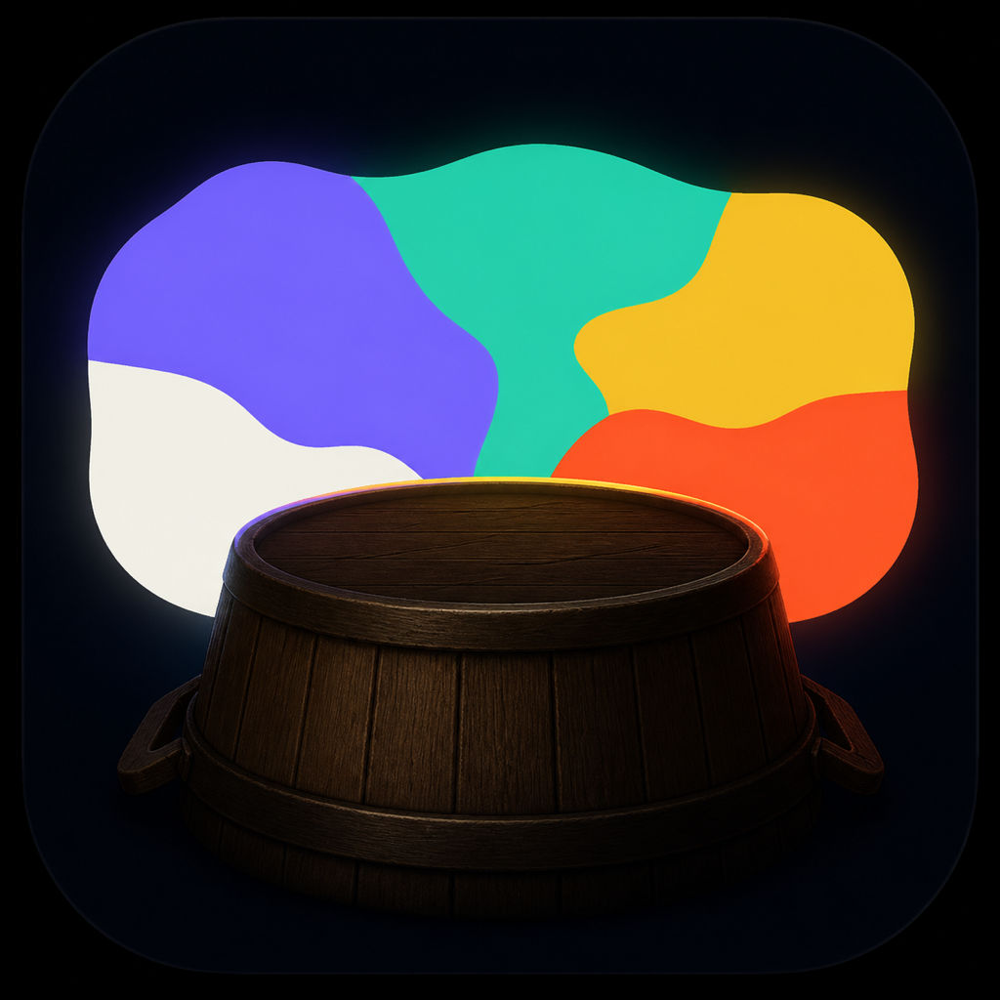
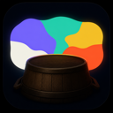

A symbol from the myth.
Resonant Tub starts with the app icon. Uzume dances and stamps on the overturned tub; the sound and laughter create curiosity; Amaterasu looks out; light returns.

Resonant Tub
The dark tub is the remembered instrument of the performance. It does not emit light. The separate chromatic field behind it represents Amaterasu looking out and light returning to the world.

128The Dock test.
This proof uses the finished raster—not an SVG approximation. The neighboring shapes are neutral stand-ins used only to judge recognition and visual weight.
What the icon compresses.
The icon shows the two memorable endpoints, not every narrative step. The tub stands for dancing, stamping, sound, and laughter. The independent color field stands for curiosity succeeding—Amaterasu looks out and light returns. At 16 px, the wooden construction recedes but the dark-instrument/returned-color relationship survives.